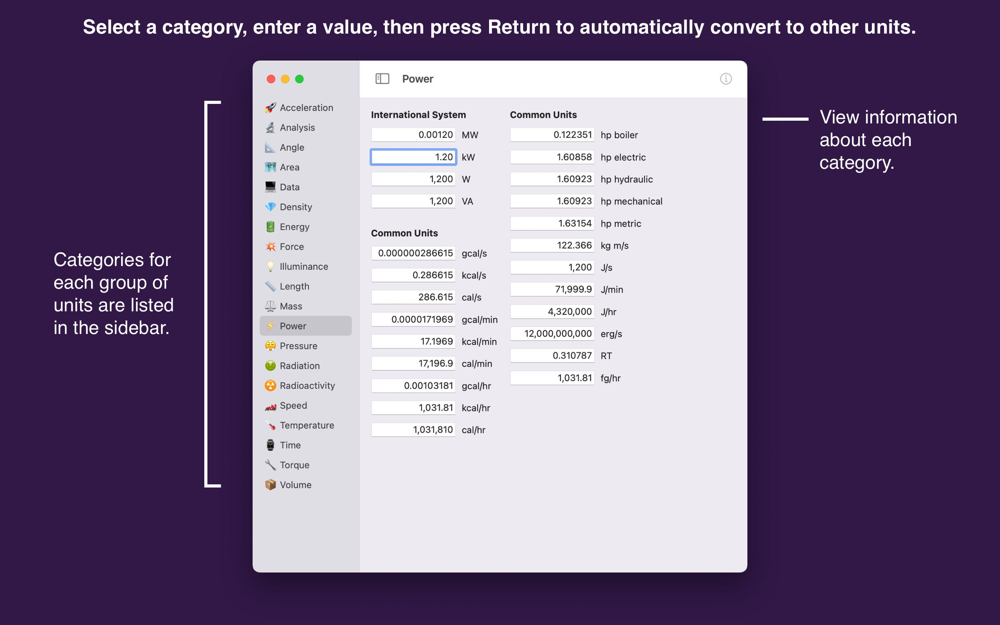
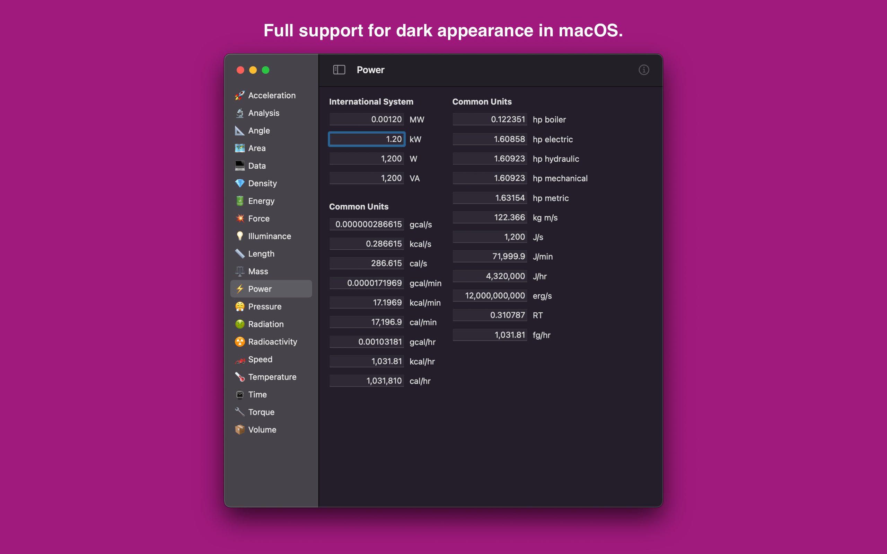
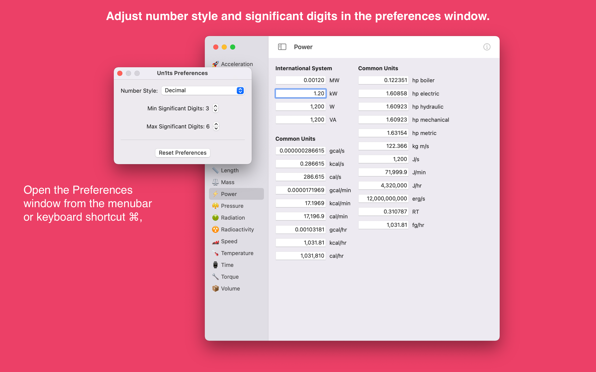
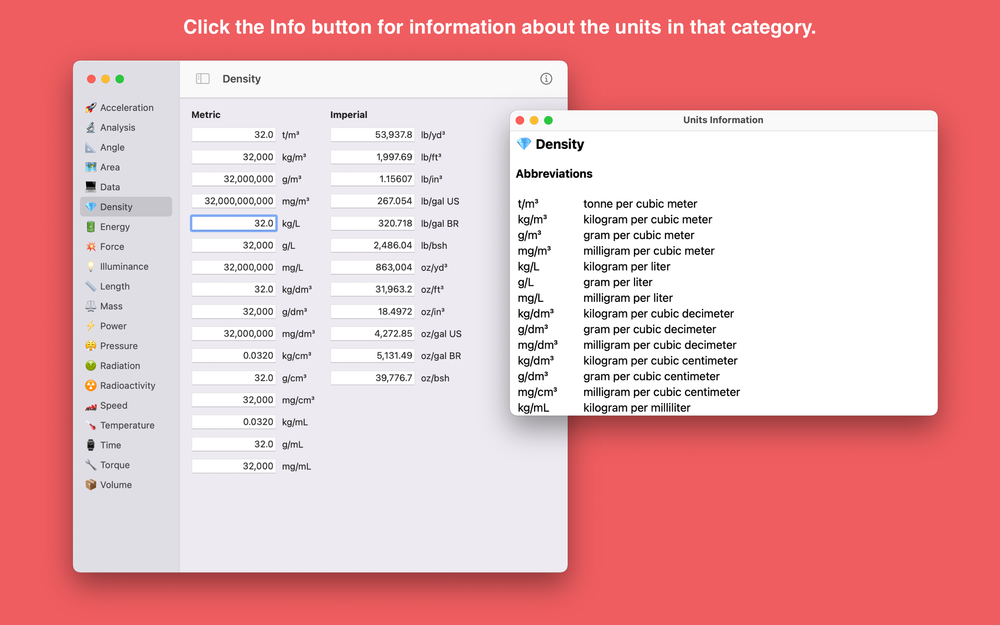

Un1ts is a comprehensive unit converter for the Mac. This native app is built with Swift and SwiftUI to support the latest features of macOS. Just enter a value in a field and it will automatically convert to all units in that category.
Categories for unit conversion include:
App Store - Un1ts is available exclusively on the Mac App Store.
Email - Questions, comments, and other feedback.
Mastodon - Announcements, questions, and other feedback.
If you would like to support the development of Un1ts, beyond the one-time purchase fee, donations to the developer can be sent via GitHub Sponsors, Patreon, Buy Me A Coffee, and PayPal.




Un1ts was originally released in 2013 for the Mac. It was written entirely in Objective-C and was one of the first apps I released on the Mac App Store. In 2019, I decided to create a new version of the app written in Swift and SwiftUI.
Un1ts uses calendar versioning for releases where major releases are Year.Month (v20.4) and minor releases are Year.Month.Day (v20.4.9). For example, v20.4 refers to the version released in April 2020.
I would like to thank the following people for their invaluable programming advice: Jeff Biggus, Adam Byram, Lucas Derraugh, and Bill Morefield.
The Un1ts app does not collect any user data. Settings such as number style and significant digits are stored on the user's computer.
Developed by Gavin Wiggins © 2025